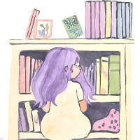

Bem-vindo ao Pena Livre, o oásis onde as almas dos escritores encontram sua liberdade mais pura. Neste santuário literário, as palavras fluem como rios cristalinos, tecendo tapeçarias de imaginação e emoção.
Aqui, cada pena é uma extensão da alma, cada linha uma viagem através dos reinos da mente. Nos corredores virtuais do Pena Livre, os escritores são os mestres da sua própria narrativa, os arquitetos dos seus próprios mundos. Junte-se a nós, oh contadores de histórias, artífices das letras e sonhadores eternos!
No Pena Livre, suas palavras encontram asas para voar e seus contos encontram um lar acolhedor no coração daqueles que buscam escapar para além das fronteiras da realidade.
